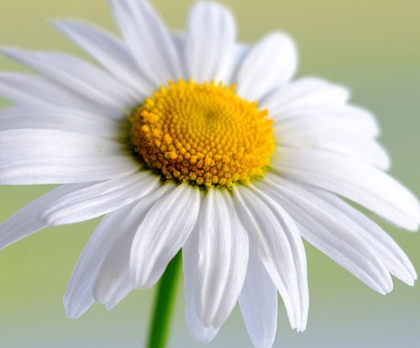

The bliss of Nature
What do we mean with the bliss of nature? Well, nature provides the feeling of bliss and joy in so many ways and none of it cost a penny! Time spent in nature is beneficial in many ways, not just for feeling the feeling of bliss and joy. Some benefits of spending time outdoors are:
- You get fresh air filled with oxygen into your lungs
- The light from the sun makes your body produce vitamin D and melatonin, both which is crucial for your health.
- Your eyes sees objects far away, which is a good compliment from sitting and staring into a screen all day.
- You will hear sounds from nature - birds, the wind, waves etc. This types of sound is calming for the body.
- Spending time in nature gives you a feeling of being free.